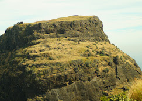
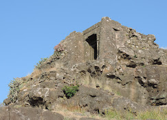
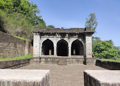

मोरा किल्ला
Location : Click Here For Google Map
- माहिती
- मोरा किल्ला महाराष्ट्र राज्याच्या रायगड जिल्ह्यात स्थित एक ऐतिहासिक किल्ला आहे. किल्ला महाराष्ट्राच्या पश्चिम समुद्र किनाऱ्यावर स्थित आहे आणि त्याचं महत्त्व विशेषतः किल्ल्याच्या भव्यतेला आणि समुद्र किनाऱ्याच्या नजाऱ्याला आहे. मोर किल्ल्याचे स्थापत्य लहान असून, किल्ल्याच्या शिखरावरून समुद्राचे आणि आसपासच्या परिसराचे अप्रतिम दृश्य दिसते.
किल्ल्याच्या भिंती आणि बुरुज अजूनही अस्तित्वात आहेत, जे त्याच्या स्थापत्य कलेचा पुरावा देतात. मोर किल्ल्याला विशेष करून पर्यटकांचे आकर्षण आहे, जे किल्ल्याच्या शिखरावर चढून किल्ल्याच्या ऐतिहासिकतेचा आणि निसर्गाच्या सौंदर्याचा अनुभव घेतात.
मोरा किल्ला एका सुरक्षित ठिकाणी स्थित असून, त्याच्या आसपास अनेक नैसर्गिक सौंदर्यपूर्ण दृश्ये आहेत. किल्ल्याचा ऐतिहासिक दृष्टिकोन आणि समुद्राकडील दृश्ये या किल्ल्याला एक खास महत्त्व देतात.
Explore the historical beauty


